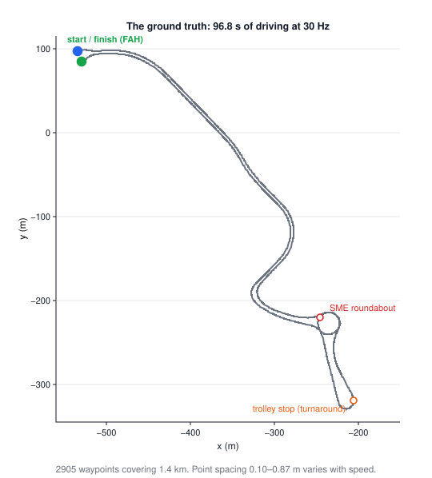
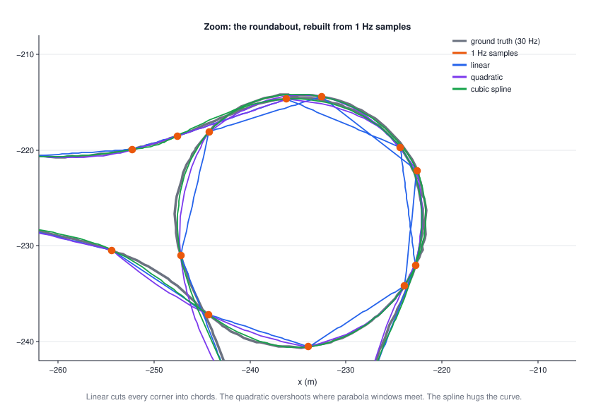
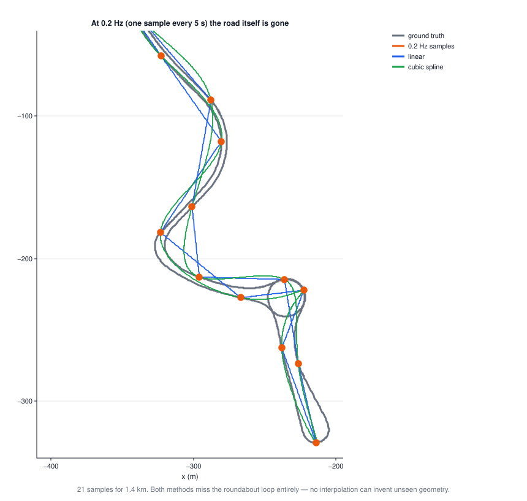
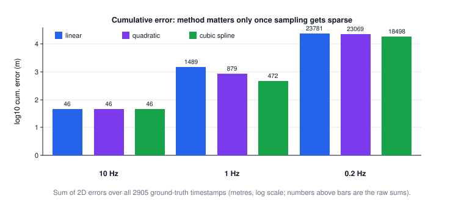
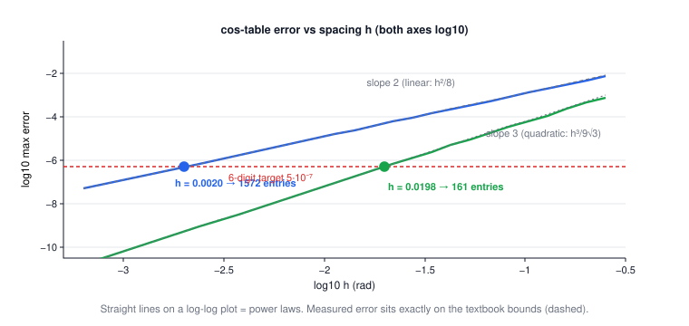

HW2 companion: rebuilding a trajectory by interpolation
Companion to CSE 276C HW2 (due Oct 29) · applies Lecture 3 (interpolation). Every number on this page was computed in
scripts/hw2/.The big picture
Lecture 3 built interpolators on toy data. HW2 hands you a real one: a self-driving cart logged its position at 30 Hz around Voigt Drive, and you must pretend the sensor was slower (10 Hz, 1 Hz, 0.2 Hz), rebuild the missing points, and measure the damage. The chain:
30 Hz ground truth → keep every k-th point → interpolate back to 30 Hz → error = distance to the truth you hid
| robotics problem | what you have | what you need | method |
|---|---|---|---|
| trajectory upsampling (Q1) | sparse waypoints over time | a 30 Hz trajectory | linear / quadratic / spline on x(t), y(t) |
| fast trig on cheap hardware (Q2) | memory, integer math | cos x to 6 digits | lookup table + local interpolation |
| sensor fusion at mismatched rates | GPS at 1 Hz, IMU at 100 Hz | values on one clock | same machinery |
1 · The data: 96.8 s of driving
waypoints.csv has 2905 rows (x, y) in metres, one per 1/30 s. The route:
FAH → SME roundabout → trolley stop → FAH, about 1.4 km.

Worked example: what one row of the file means (click to open)
Row 2041 is \((-319.43,\,-195.04)\) and row 2071 is \((-316.12,\,-179.96)\). They are 30 rows apart, so they are exactly 1 s apart: \(t = 68.0\) s and \(t=69.0\) s. The straight-line distance between them is 15.4 m, but the road distance along the 30 in-between points is 16.2 m — the cart was turning. That bending is exactly what the interpolators will fight over.
Consecutive points are 0.10–0.87 m apart (median 0.48 m → median speed \(0.48 \times 30 \approx 14.4\) m/s ≈ 32 mph). The spec's "spatial density varies" is the cart speeding up and slowing down.
2 · The experiment: downsample, rebuild, compare
Keep every k-th row to fake a slow sensor, then rebuild all 2905 timestamps:
| fake rate | keep every | # samples | road between samples |
|---|---|---|---|
| 10 Hz | 3rd point | 969 | ≈ 1.4 m |
| 1 Hz | 30th point | 98 | ≈ 14 m |
| 0.2 Hz | 150th point | 21 | ≈ 72 m |
The error at timestamp \(t_i\) is the 2-D distance \(e_i = \lVert \hat{p}(t_i) - p(t_i) \rVert\), and the homework's cumulative error is \(\sum_i e_i\) over all 2905 timestamps.
- Does your downsample include the final row? (If not, the last stretch needs extrapolation. This page appends the last row to every sample set.)
- Cumulative error summed over all 2905 points (sample points contribute 0), or only over the hidden ones? Both are defensible — say which you used.
- Parameterize by time (what this page does) or by arc length? Time is what the sensors give you.
3 · Linear interpolation: connect the dots
Between two kept samples, draw a straight segment. For \(t\) between samples at \(t_k\) and \(t_{k+1}\):
$$\hat{x}(t) = x_k + \frac{t - t_k}{t_{k+1} - t_k}\,(x_{k+1} - x_k)$$| symbol | meaning |
|---|---|
| \(t_k,\,t_{k+1}\) | timestamps of the two surrounding kept samples |
| \(x_k,\,x_{k+1}\) | their x-coordinates (same formula again for y) |
| \(\frac{t-t_k}{t_{k+1}-t_k}\) | fraction of the way across the gap, 0 → 1 |
Worked example: the worst spot at 1 Hz (click to open)
At \(t=68.5\) s (exactly halfway between samples) linear gives the midpoint:
$$\hat{p} = \tfrac12\big[(-319.43, -195.04) + (-316.12, -179.96)\big] = (-317.78,\,-187.50)$$Truth is \((-320.09, -188.10)\). Error = 2.39 m — about a lane width, and this is the worst point on the whole track at 1 Hz. The cart was mid-curve at 15.3 m/s, and a chord across a curve always cuts the corner.
4 · Quadratic: a parabola through 3 samples
Take three consecutive kept samples and pass the unique parabola through them (Lagrange form):
$$\hat{x}(t) = x_0 \frac{(t-t_1)(t-t_2)}{(t_0-t_1)(t_0-t_2)} + x_1 \frac{(t-t_0)(t-t_2)}{(t_1-t_0)(t_1-t_2)} + x_2 \frac{(t-t_0)(t-t_1)}{(t_2-t_0)(t_2-t_1)}$$The three fractions are weights that sum to 1; each is 1 at its own sample and 0 at the other two.
Worked example: same spot, same data (click to open)
Samples at \(t_0,t_1,t_2 = 68, 69, 70\) s; evaluate at \(t=68.5\): weights \(= 0.375,\; 0.75,\; -0.125\) (sum = 1 ✓). Note the negative weight — the parabola uses the far point to bend away from it.
$$\hat{p} = 0.375\,p_0 + 0.75\,p_1 - 0.125\,p_2 = (-319.25,\,-187.65)$$Error = 0.95 m — 2.5× better than linear, because a parabola can bend with the road.
5 · Cubic spline: one smooth curve through all samples
A cubic polynomial per gap, chosen so that value, slope, and curvature all match at every sample. That global smoothness constraint is solved with one tridiagonal system (Lecture 3), and it's what makes the spline hug curves:
$$\hat{x}(t) = A x_k + B x_{k+1} + \tfrac{h^2}{6}\big[(A^3 - A)\,x''_k + (B^3 - B)\,x''_{k+1}\big]$$| symbol | meaning |
|---|---|
| \(A = \frac{t_{k+1}-t}{h},\; B = 1-A\) | the two linear-interpolation weights |
| \(x''_k\) | second derivatives at the samples, from the tridiagonal solve |
| \(h = t_{k+1}-t_k\) | gap length |
Read it as: linear interpolation plus a curvature correction. Set the \(x''\) terms to zero and you're back to section 3.
At the same worst spot, the spline gives \((-319.19, -188.30)\), error 0.92 m.
scipy.interpolate.CubicSpline defaults to the not-a-knot end condition;
the classic "natural" spline sets end curvature to 0 instead. At 1 Hz they differ by ~2.5%
in cumulative error (471.9 vs 459.9 m). Either is fine — name the one you used.6 · Results: what wins where
🕹️ Try it: the actual homework experiment, live. Switch rate, method and view — the error numbers update from the real 2905-point dataset.


Reference numbers (sum over all 2905 timestamps; scipy default spline):
| rate | linear | quadratic (tiled) | cubic spline |
|---|---|---|---|
| 10 Hz | 45.8 m | 46.4 m | 45.9 m |
| 1 Hz | 1488.7 m | 878.8 m | 471.9 m |
| 0.2 Hz | 23 781 m | 23 069 m | 18 498 m |

For your Q1.3 answer (quality at each rate), the pattern to explain:
- 10 Hz: all three methods are within 1.5% of each other (~46 m total, 1.6 cm mean). Samples every ~1.4 m of road leave nothing to invent. Method choice is irrelevant.
- 1 Hz: errors grow ~30× and the methods separate: spline beats linear by 3.2×. ~14 m of road per gap means corners now live between samples.
- 0.2 Hz: catastrophic for all (mean error 6–8 m — off the road). A low sample rate hurts most where curvature is high and speed is high: the worst errors (20–26 m) sit exactly at the roundabout and the hairpins, while straightaways survive even 0.2 Hz almost intact.
For Q1.4 (method differences): linear cuts chords — its error is pure corner-cutting and it can never overshoot. Quadratic bends but tiled windows add kinks, and near-collinear fast samples can make it overshoot. The spline matches slope and curvature across samples, so it tracks arcs best at moderate rates — 1 Hz is where the gap is most dramatic (3.2×). But once geometry falls between samples (0.2 Hz), smoothness can't help much: all methods fail together, and the spline's advantage shrinks to 1.3×. One more regime: with noisy measurements, higher-order methods chase the noise — linear's bluntness becomes a feature.
7 · Q2: a cos table for a robot with no FPU
No floating-point unit → compute \(\cos x\) by storing a table \((x_i, \cos x_i)\) with uniform spacing \(h\) and interpolating between entries. Uniform spacing is the whole trick: finding the right entry is integer arithmetic, \(k = \lfloor x/h \rfloor\), no search.
How far can a chord sag? The linear bound
On one interval the linear-interpolation error obeys the classic bound:
$$|e(x)| \;\le\; \frac{h^2}{8}\,\max |f''| \;=\; \frac{h^2}{8} \quad\text{for } f=\cos,\; |f''| = |{\cos}| \le 1$$| symbol | meaning |
|---|---|
| \(h\) | table spacing in radians |
| \(h^2/8\) | max sag of a chord across one interval — worst at the interval's midpoint |
| \(\max|f''|\) | how curvy the function can get; for cos it's 1 (at the hilltops) |
Worked example: solve for h (click to open)
"6 decimal digit accuracy" = error at most \(5\times10^{-7}\) (half a unit in the 6th decimal).
$$\frac{h^2}{8} \le 5\times10^{-7} \;\Rightarrow\; h \le \sqrt{4\times10^{-6}} = 2.000\times10^{-3}\ \text{rad}$$ $$N = \left\lceil \frac{\pi}{h} \right\rceil + 1 = 1571 + 1 = \mathbf{1572\ entries}$$Brute-force check over 2 million test points: measured max error \(5.000\times10^{-7}\) — the bound is tight for cos, because cos really does reach curvature 1 inside the interval.
Quadratic: one more order of h
Interpolating with a parabola through 3 consecutive entries (nodes at \(0, h, 2h\)) gives
$$|e(x)| \;\le\; \frac{\max|f'''|}{3!}\,\max_x |(x-x_0)(x-x_1)(x-x_2)| \;=\; \frac{h^3}{9\sqrt{3}} \quad (\max|f'''| = \max|\sin| \le 1)$$Worked example: solve for h again (click to open)
Brute-force check: measured \(4.855\times10^{-7} \le 5\times10^{-7}\) ✓. Ten times less memory for two extra multiplies per lookup — that's the trade.
🕹️ Try it: slide the table size and watch the error bumps shrink against the bound; the presets land exactly on the 6-digit answers.

8 · Summary
- Interpolate trajectories as x(t), y(t) separately — time is the parameter the sensors give you.
- Error ≈ what the road does between samples. Dense sampling → method irrelevant; moderate sampling → smoothness wins; sparse sampling → everything loses, exactly at fast curves.
- Error bounds aren't pessimism: for cos they're tight, and they turn "how many table entries?" into one line of algebra.
| method | one-line idea | use it when |
|---|---|---|
| linear | chord between neighbors | dense samples, noisy data, cheap hardware |
| quadratic | parabola through 3, tiled or sliding | mid density; tables (big memory win over linear) |
| cubic spline | global smooth curve, tridiagonal solve | smooth motion, moderate gaps, you can afford a solve |